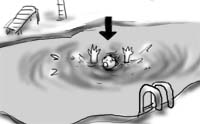
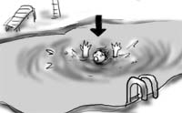

今日は，アパート備え付けの共用プールを初めて利用してみました．
ひょうたん池みたいな外見の上，入り口からすぐにプールに入ると深さは2フィート半(約75cm)ほどなので，子供だましだと思いがちですが，奥の最深部に行くとなんと8フィート(約2m40cm)もありやがります．
泳いだのはものすごく久しぶりだった上，準備体操を忘れたので，最深部で足が吊って溺れかけました(本当)．
水辺は危険がイッパイです(ヘボい)．
今日は，アパート備え付けの共用プールを初めて利用してみました．
ひょうたん池みたいな外見の上，入り口からすぐにプールに入ると深さは2フィート半(約75cm)ほどなので，子供だましだと思いがちですが，奥の最深部に行くとなんと8フィート(約2m40cm)もありやがります．
泳いだのはものすごく久しぶりだった上，準備体操を忘れたので，最深部で足が吊って溺れかけました(本当)．
水辺は危険がイッパイです(ヘボい)．
今日は，Santa Monicaへ出かけました．
Santa Monicaはビーチ，ピア，そして繁華街のある小規模な観光地です．桟橋の看板が有名なモニュメントになっているというので見に行ったのですが，あまりのヘボさに腰を抜かしそうになりました．ガッカリ度で言えばシンガポールのマーライオンを超えています．そしてガッカリしすぎて写真を撮り忘れました．すいません．
その後，繁華街を散策．普段住んでいるところは郊外なので，こういった繁華街で店が軒を連ねている様子を見るのも久しぶりです．フリーウェイを使って30分程で来られるので，買い物にぶらっと来るのもいいかもしれません．だらだら歩いているとアップルストアを発見！思わず興味本位で突入．
本当にブランドショップぽかったです．まだG5はなかったヨ！しかし，なぜ秋葉原でもないのに汗スメルが立ちこめているのか．それだけが謎です．やはり計算機大好きっ子が集まるとそうなってしまうのでしょうか．内装はあんなにお洒落なのになぁ…．
最後に，みやげ物屋で見つけたおもしろTシャツを紹介しておきます．よくみると帽子はインベーダーキャップです．
とは言え，ディスカバリーチャンネルとカートゥーンネットワークは見てます．ルパン三世の吹き替えの再現度はなかなかです．銭形警部の「ルゥパァ〜ン！」が再現されています．あと，遊戯王が大人気ぽいですよ．
そしてなんと「フリクリ」が放送されているではありませんか！変なこっち製のアニメ(フラッシュで作ったようなシンプソンズの出来損ないみたいなヤツ)を見た後だけに動き！音！クォリティ違い過ぎ！ガイナックス最高！吹き替えは，オリジナルに近い感じで安心です．一番再現度が高いのがマミミでした．
1話ずつ毎夜放送なので，これから毎晩のお楽しみです．ちなみに「いただきマンモス」は「All righit! Monster!」になっていました．あと「トミノ的なアレ」をちゃんと英語で説明しているので偉いと思います．
本当はディスカバリーチャンネルで仕入れた科学知識を披露するはずが，アニメの話だけで終わってしまいました(最初からその気なし)．
DSLに引き続き，ケーブルTVが開通しました．
この辺りは，地上波放送をしていない(らしい)ので，TVを見るにはケーブルTVと契約するしかありません．最初はベーシック(アナログ)の他にデジタルも申し込もうかなぁと思ったのですが，契約の電話口でベーシックだけだと何チャンネルあるか訪ねたところ，75チャンネルという想像を絶する数字が返ってきたので，ベーシックだけの契約です．もともとそんなTV見る方じゃありませんしね．
朝一で気のよいおっちゃんがやってきて，床にケーブルを這わせていきます．「ベーシックで75チャンネルなんて多いですね．日本なんてベーシックは12チャンネルもありませんよ」と言うと「アメリカの人は一日中TVばっか見てるんだよ」と答えが返ってきました．なんかものすごく納得できる答えです．
配線が終わってTVをつけると，無事に映像が映っているのが確認できました．万歳！これでまた快適生活に一歩近付いた！
お礼に冷蔵庫からダイエットコークを渡そうとすると(こういう場合はあまりチップでお金は渡さないようです)，「あーそれダイエットコークじゃん．ダイエットコークはまずいからいらない」と断られたばかりか，「だいたいお前，ダイエットなんて必要ないだろ，なんでわざわざまずいダイエットコークなんて買うの？」と逆に注意を受けました．
配線のおっちゃんが帰った後，さっそく75チャンネルの膨大な番組を順に確認したのですが，その想像を絶するつまらなさに気絶しそうになりました．ほとんどが通販番組とか安いトーク番組で，言うなれば日本の地方放送局の一日分の番組が75チャンネルに分散した感じです．だまされた！